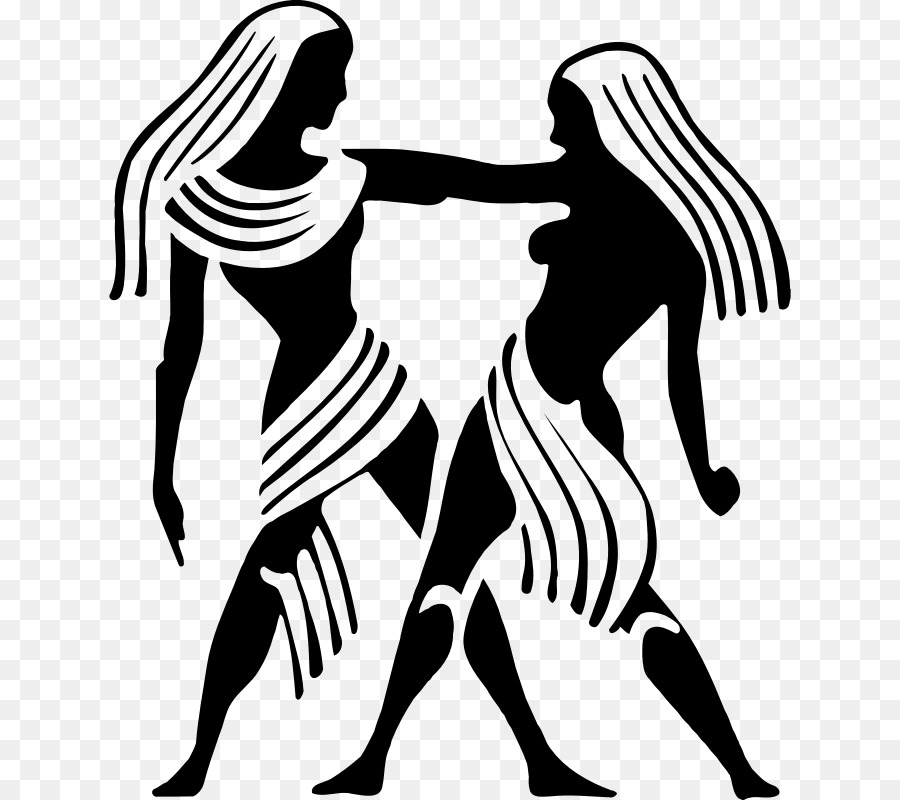

Gemini / Mithun Rashi
Master Planet : Mercury / Budh
Ka, Ca ,Ki, Ke ,Ku, Cu, Koo, Coo ,Gha ,Yan ,Cha, Chh ,Kay, Kew ,Ko, co ,Ha
The persons with Gemini sign have small face, pointing towards chin. They may possess dual nature. They have effective personality, depicting their intelligence, judicious and humane nature. Their nature is versatile, imaginative, pleasant, thoughtful and adaptable. This rashi sign covers the last two charans of Mrigshira; complete Ardra and first three charans of Punarvasu Nakshatras.
The people of this sign usually have thin physique, are tall in height, medium complexion, dark eyes, thin hair. They are generally soft-spoken, with good power of oration. They are learned people with good command of language. They use phrases frequently while talking. They lean while walking. They have pointed nose and long organs of the body.
They are fast at work. They advance their logic in talk, conversations. They love change and possess foresightedness. As a rule, they are short tempered but cool down quite easily. They can consistently work without feeling fatigue, which adversely affects their health. They get help from friends and relatives. They are more passionate towards sex. They learn quickly the traits of their service or occupation and are usually successful. They usually have big families. They are prone to addictions. They are comedians by nature. Professions of Engineering, architecture or apparel are of their taste. They are religious. They rise quite late in their lives. They are prone to cold and eye diseases. They have poor digestive power.